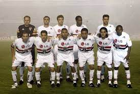

O ESQUADRÃO MORTALO importante é que o primeiro clube no Brasil a conquistar a América três vezes havia imposto a si mesmo como meta a reconquista do mundo. O Brasileirão ficou a cargo do time reserva – que conseguiu deixar o time ainda na metade superior da tabela de classificação. Os olhos e a alma dos tricolores estavam em um só lugar: a terra do sol nascente. Após fases eliminatórias entre confederações menores, os são-paulinos estrearam na fase semifinal do torneio contra o Al-Ittihad, da Arábia Saudita. Em jogo difícil, mas sob controle, o Tricolor venceu por 3 a 2 (dois gols de Amoroso e um de Rogério Ceni, de pênalti). Restava, na final, o Liverpool. |
 |
|
O time inglês, apontado como favorito pro quem quer que fosse, exceto os são-paulinos, vinha de uma longa sequência invicta e sem sofrer gols. Realmente não seria fácil. E não foi. |
|
| Desenvolvido por Renan Azevedo Carvalho - 2023 | |